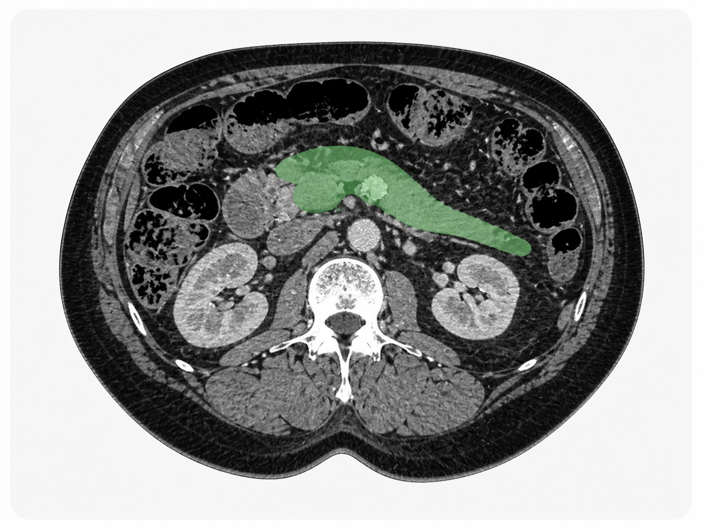
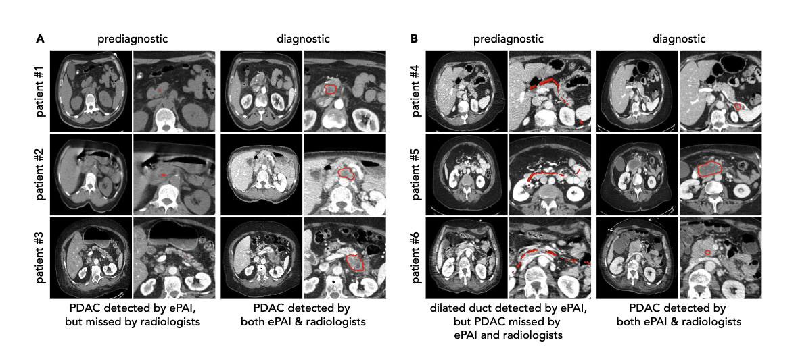
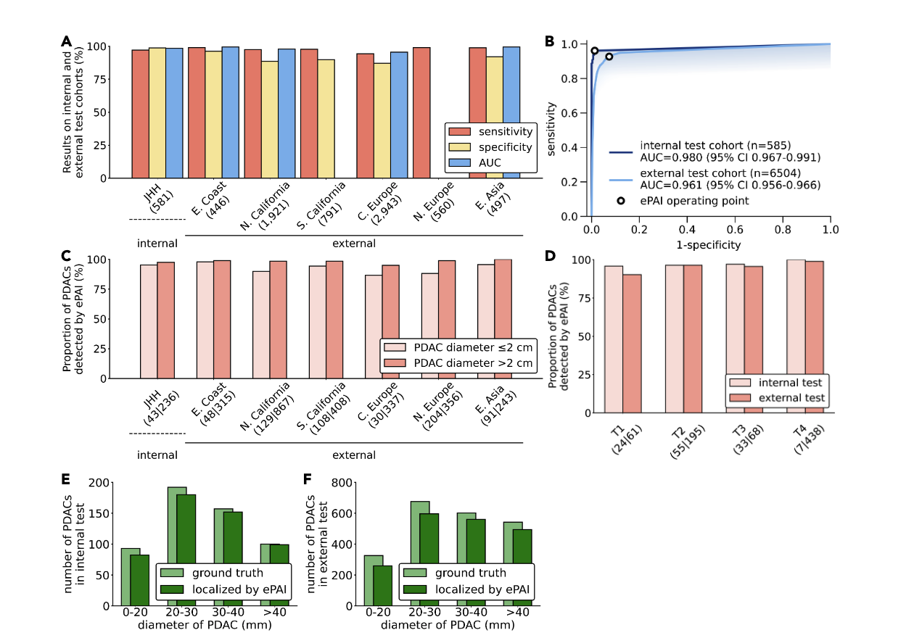

Opportunistic cancer detection from routine CT
Early cancer signals may already be in the scan.
ScanPilot turns routine abdominal CT into an AI-assisted second-read workflow, starting with pancreatic cancer.
Research/product demo only. Not for diagnosis, treatment, or patient-care decisions. Not FDA cleared.

ePAI research results
RESEARCH AFFILIATIONS
Research collaborators across leading AI and medical institutions.
The ePAI research ecosystem includes collaborators affiliated with universities, hospitals, cancer centers, and AI labs across North America, Europe, and Asia.
View extended collaborator affiliations
Platform
Healthcare already has the data. It lacks the early detection layer.
Routine abdominal CT is acquired every day for unrelated reasons. Some scans may contain subtle pancreatic cancer signals months before diagnosis, but current workflows rarely surface them systematically.
Existing archives
Scale on hand
Health systems already hold large CT archives suitable for retrospective evaluation.
Prediagnostic signal
Earlier signal
The opportunity is to find reviewable signals before the cancer is clinically diagnosed.
Human-in-the-loop
Assistive by design
ScanPilot is built for assistive second-read review, not autonomous diagnosis.
Product
CT-PDAC Review turns research signal into a review workflow.
The product workflow is simple: ingest CT, parse anatomy, localize suspicious pancreatic regions, score suspicion, and queue cases for radiologist review.
- 1Ingest CT
- 2Parse anatomy
- 3Localize region
- 4Score suspicion
- 5Queue review
Open the real interactive demo
Explore public PanTS sample data with CT slices and pancreas/lesion overlays in the CT-PDAC Review Console.
Launch interactive demo
Evidence
Built on ePAI research. Productized for validation.
The research evidence motivates the product roadmap. It does not constitute FDA clearance or a claim of performance in live clinical use.
7,158external patients / 6 centers
AUC 0.918–0.945external validation range
75 / 159prediagnostic detections
347 daysmedian lead time
95.4%reader-study specificity
+50.3 ptssensitivity gain vs radiologists

Commercial
The first product is paid retrospective validation.
Before clinical deployment, health systems can run ScanPilot on historical CT archives to measure missed-opportunity cases, false positive burden, lead time, and radiologist review workload.
Historical CT archive
Run on de-identified abdominal CT cohorts.
Missed-opportunity analysis
Identify cases where suspicious signals may have appeared before diagnosis.
False-positive burden
Estimate review workload before any live deployment.
Validation package
Deliver a clinical utility report for design partners, publications, and future prospective studies.
Investors
Why this can become a company.
Hospitals already have the data
No new imaging modality required to begin retrospective validation.
Research-use revenue before FDA clearance
Paid archive studies can precede prospective deployment.
Clear path from retrospective to silent prospective
Workflow evidence can graduate with governance and partners.
Expands from PDAC to opportunistic cancer detection
Same technical pattern can extend across tumor types over time.
Contact
Turn routine CT into an earlier cancer detection workflow.
ScanPilot is opening conversations with health systems, imaging networks, translational teams, and investors.
Research/product demo only. Not for diagnosis, treatment, or patient-care decisions. Not FDA cleared.